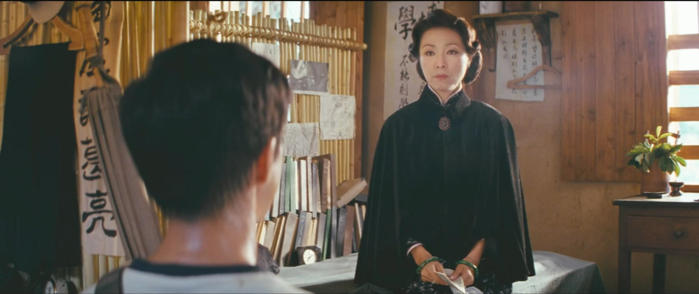
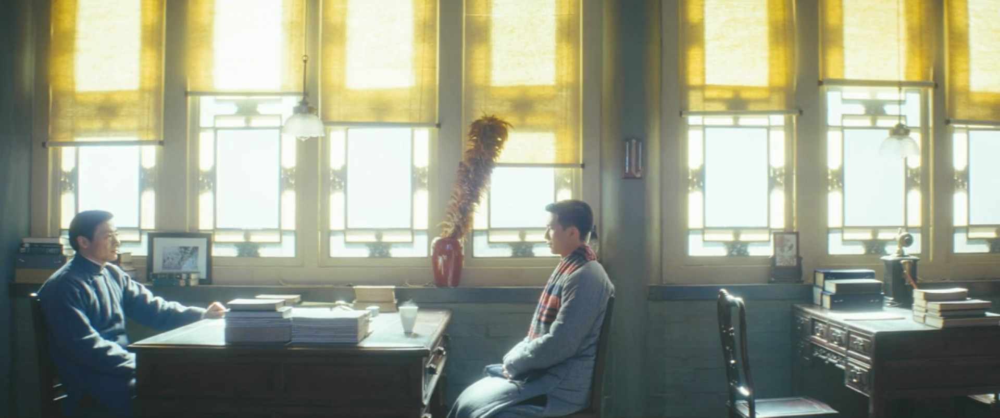
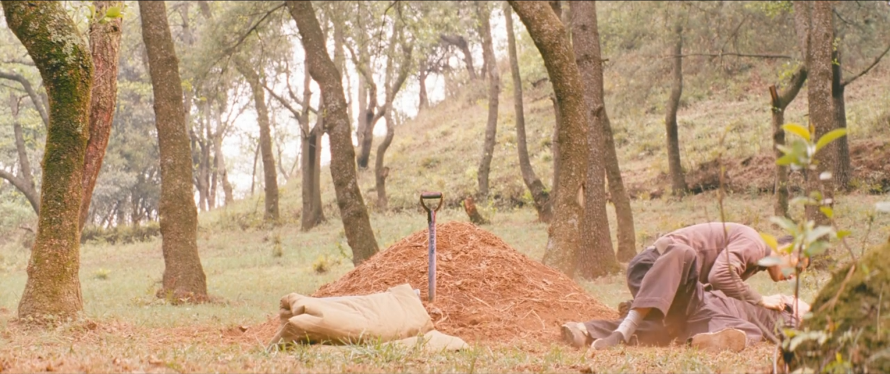
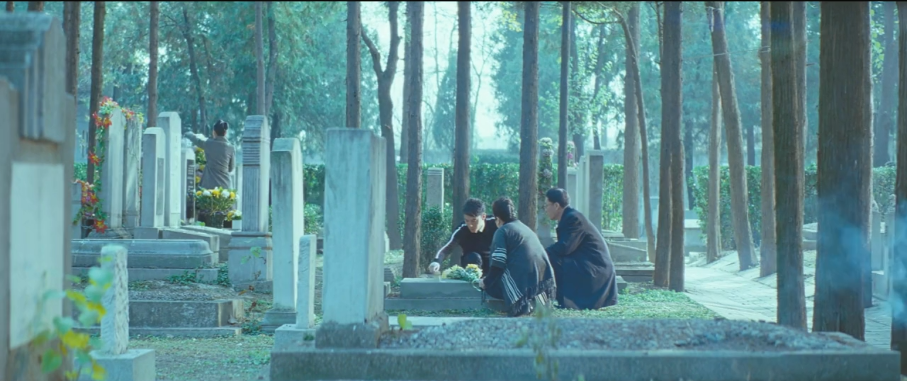
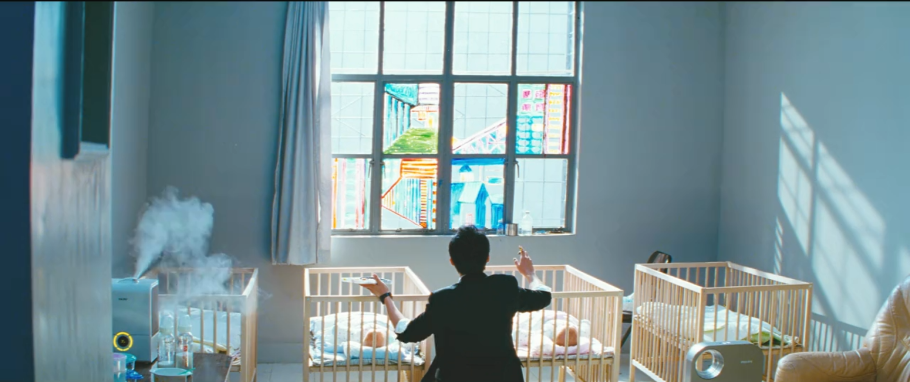

无问西东：坚守你的真实与珍贵
开头
张果果旁白：
如果提前了解了你们要面对的人生，不知你们是否还会有勇气前来。
Javalover93：开头莫名，最后才发现是首尾呼应的写法，张果果实是在与四胞胎对话。
飞行教官：真心、正义、无畏和同情
飞行教练独白（对众学生）：
你们这些年轻人，谁想上来试一试？怕了吗？害怕上台丢脸？这个时代，缺的不是完美的人，缺的是从自己的心里给出的真心、正义、无畏和同情。
Javalover93：“难得”的教官。
沈光耀母子对话：人生的幻光和人生的乐趣

昆明，沈光耀母子对话（粤语），沈跪于地：
母：家训第三条，第七条。
沈：妈。
母：你背啊。
沈：第三条，祖宗虽远，祭祀不可不诚。子孙虽愚 ，经书不可不读。第七条，负甲为……（停顿，沈低头）……兵，执笔为吏，身死名灭者如牛毛，角立杰出者如芝草，故不得以有学之贫贱比于无学之富贵也。
母：你知不知道这两条家训是什么意思呢？
沈：父亲说过，人生不应该用功名利禄来评价每一个人的价值.
母：你忽然发一封家书来，议论时政，总还要去当兵。你知不知道你父亲看完这份信后，他就生病了。
沈：父亲病了？不是只有一只眼有事吗？
母：你知不知为什么你父亲和我都不希望你当兵。
沈：因为我是你们的独生子。
母：这个不是主要的原因。当初你离开家，还要来那么远的地方读书，你父亲和我都没有反对过。因为我们想你能够享受到人生的乐趣。比如读万卷书行万里路。比如同你自己心仪的女子结婚生子，不是为了给我们开枝散叶，而是要你能够享受到为人父母的乐趣。（叹气，举起征兵宣传单）你一生要追求的功名利禄，没有一样不是你祖先没有经历过的，这些只不过是人生的幻光，你懂不懂啊？你明不明啊？
（沈低头，母又叹气，侧面泪流掩泣）
沈：妈，你莫难过了。（沈激动）妈，你莫难过了。
沈姨：少爷，我们一路来，夫人真的担心你，怕你……（哽咽）
母：（哭腔）我怕，你都没想过后面这条路怎么走，你就连命都没了。
沈：（跪地行至母前）妈，你莫怕，我不当兵了。
母：你发誓。
沈：（低头郑重）我发誓。
母与沈姨扶沈起。
Javalover93：此时沈光耀只是被年轻的热血和保家卫国的激情所感染，并不能算是经过深思熟虑，是沈母所说的幻光。
梅贻琦与吴岭澜谈“真实”

北京，梅贻琦与吴岭澜坐室内，水壶开，梅起身倒水。
梅：你的物理学是不列，而英文学国文学都是满分，如此天资，当初你为什么不学文科，而偏要念实科呢？
吴：因为最好的学生都读实科。
（梅倒水完毕，坐下）
梅：你求学的目的是什么啊？
吴：（略一思索）我只知道，不管我将来做什么，在这个年纪，读书学习都是对的。我何用管我学什么，每天把自己交给书本，就有种踏实。
梅：但是，你还忽略了一件事。（吴不解）真实。
吴：真实。
梅：人把自己置身于忙碌当中，有一种麻木的踏实，但丧失了真实。 你的青春也不过只有这些日子。
吴：（恳切）什么是真实？
梅：你看到什么，（切入昆明日机飞越镜头）听到什么，（切入北京陈鹏雕木花镜头）做什么，和谁在一起，有一种从心灵深处满溢出来的不懊悔也不羞耻的平和与喜悦。
（吴思索）
梅：你慢慢想，转系与否，那都是小事儿。
吴：谢谢梅老师。（转身离开，回首看梅）
Javalover93：吴学习实科的想法只是随大溜，转系一事逼迫其深思选择。梅的“真实”的指点，让吴陷入危机。最终吴又受“最卓越的一群人”的感染，决定选择自己擅长的文科。
吴岭澜：对自己的真实
昆明，日机飞越，众师生藏身山间。
吴：世界于你而言，毫无意义和目的，却又充满随心所欲的幻想，但又有谁知，也许就在这令人疲倦的正午，那个陌生人，提着满蓝奇妙的货物，路过你的门前，他响亮地叫卖着，你就会从朦胧地梦中惊醒，走出房门，迎接命运的安排。
（切入北京冬天镜头，众人在湖对岸拉提琴，吴在湖这边）
吴：这是泰戈尔的诗。当我在你们这个年纪，有段时间，我远离人群，独自思索，我的人生到底应该怎样度过。某日，我偶然去图书馆，听到泰戈尔的演讲，而陪同在泰戈尔身边的人，是当时，最卓越的一群人。这些人站在那里，自信而笃定，那种从容让我十分羡慕，而泰戈尔正在讲“对自己的真实”有多么重要。 那一刻，我从思索生命意义的羞耻感中释放出来，原来这些卓越的人物，也认为花时间思考这些谈论这些是重要的，今天我把泰戈尔的诗介绍给你们，希望你们在今后的岁月里，不要放弃对生命的思索，对自己的真实。
（沈光耀一直专心地听着）
Javalover93：自信、笃定、从容。最打动我的一句话。难！
陈鹏：给予真实的力量

北京，王敏佳墓前，陈鹏遇见李想。
李：她骗了我们，她没有跟我们说那张照片上的小女孩不是她。后来我想帮她都没有办法了。
陈：（愤怒地将李扑到）你怪他没有对你真实，你给他对你真实的力量了吗？！（转身离开）
李：陈鹏，陈鹏，我不是人，你揍我一顿吧，我太想去支边了。（陈停住脚步）我骗了大家，其实那份信是我和她一起写的，院里就两个支边名额，我怕我承认了，他们就不让我去支边了。
（陈转身拽李到墓前）
陈：逝者已矣，生者如斯，对以后的人好吧。（拽李离开）
Javalover93：陈只是愿李死心而已，又念李已反省。“对以后的人好吧”，既有劝其翻篇，又有怨恨意。
张果果决定真实地面对即将做出地选择

北京，李想墓前，张果果及其父母。
张父：当年我和你妈妈，都是支边医疗队的队员。一次大风雪，我们小队的三个人在雪山中迷路了，我的腿摔伤了，走不了路。你李叔叔把所有的食物都留给了我和你妈妈，他自己一个人去找救援。他遇到了搜索队，告诉了他们我和你妈妈的位置后，就牺牲了。据说，他牺牲前的最后一句话是，逝者已矣，生者如斯。
张父：儿子啊，爸妈对你就两个希望，健康和开心。可是这两年，我们感觉你的笑容越来越少，事情都放在心里面不说。你的路还很长，可以做的事情还很多，去做自己感觉快乐和开心的事情吧。
(张起身开始扫墓)
Javalover93：所以我吐槽这是清华版本的云图，一代一代地互相影响，就是接得有些生硬。是李的牺牲精神点悟了张，还是张父的劝诫起了作用？
结束：坚守自己的珍贵

北京，四胞胎婴儿房内，张果果在彩绘窗户。
张：（旁白）如果提前了解了，你们要面对的人生，不知你们是否还会有勇气前来。看见的和听到的，经常会令你们沮丧。世俗是这样的强大，强大到生不出改变他们的念头来。可是如果有机会，提前了解了你们的人生，知道青春也不过只有这些日子，不知道你们是否还会在意那些世俗希望你们在意的事情。比如占有多少才更荣耀，拥有什么才能被爱。等你们长大，你们会因绿芽冒出地图而喜悦，会对初升的朝阳欢呼跳跃，也会给别人善意和温暖，但是却会在赞美别的生命的同时，常常甚至永远地忘了自己的珍贵。愿你在被打击时，记起你的珍贵，抵抗恶意；愿你在迷茫时，坚信你的珍贵，爱你所爱，行你所行，听从你心，无问西东。
Javalover93：结尾过于鸡汤。